Edujob.tk
На мой взгляд, это один из самих долгих проектов, благополучно положенных мною в стол.
Данный сервис я писал "вместе=)" с ребятами, проходившими обучение на инновационном практикуме "Intel", на который я попал также по случайности, заполняя все подряд заявки на конкурсы. Первоначально этот сервис должен был представлять из себя студенческий аутсорсинг, позволяющий компаниям найти себе студента, в качестве исполнителя или временного сотрудника. Именно студента(скорее всего это меня и опечалило в конце).
Данная аудитория была выбрана по нескольким, возможно оборонным или выдуманным причинам:
-Студенты дешевле
-Активнее
-"Нестандартный подход к решению сложных задач"
Мы потратили немало времени, чтобы всем вместе собираться в скайпе и ,черт подери, мы тратили по несколько часов, чтобы прийти к вышеописанной фигне. Из всего произошедшего я понял, что идеи должны формироваться за столиком в кафе, а не мозговым штурмом с почти незнакомыми людьми.
Как я и ожидал, после завершения практикума все компаньоны благополучно слились, и я решил продолжать работу над проектом самостоятельно. Мне пришлось немного переработать концепцию и сделать сервис найма студента на практику, что по-моему, сейчас начинать набирать популярность. В конце (не заврешившись) получилась вот такая штукенция:
Осторожно, ниже много картинок! 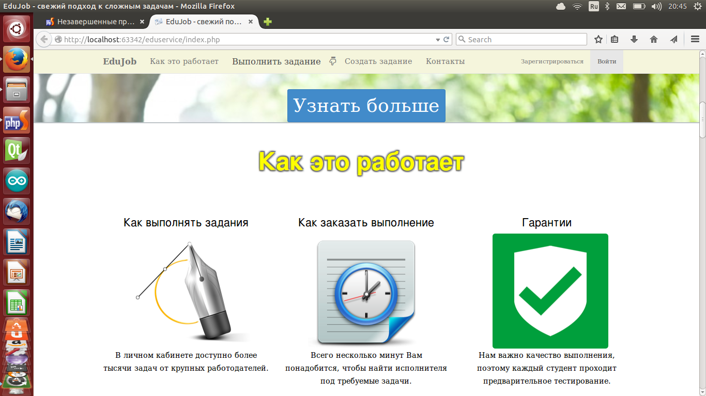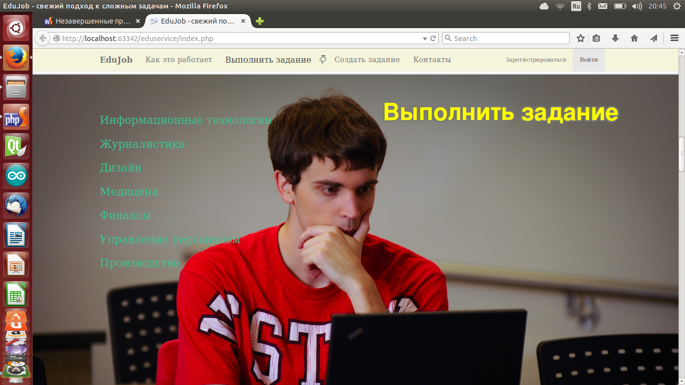
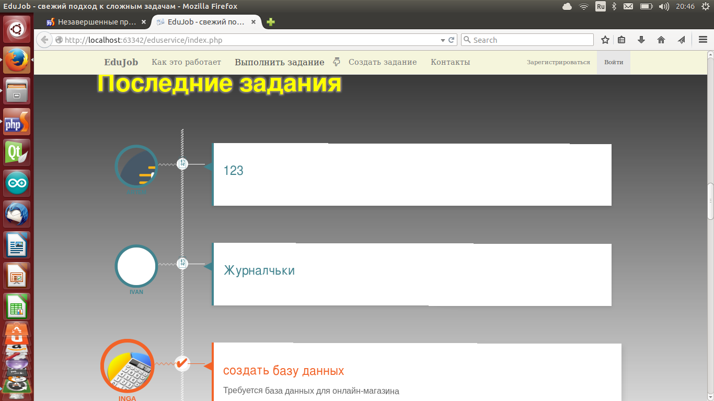

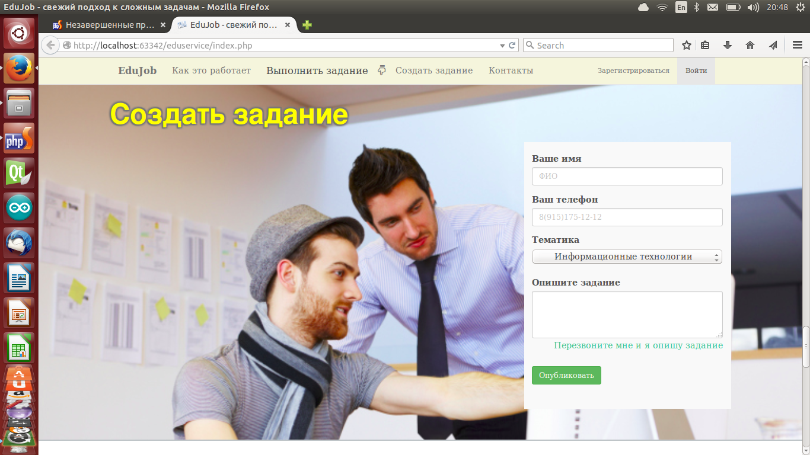
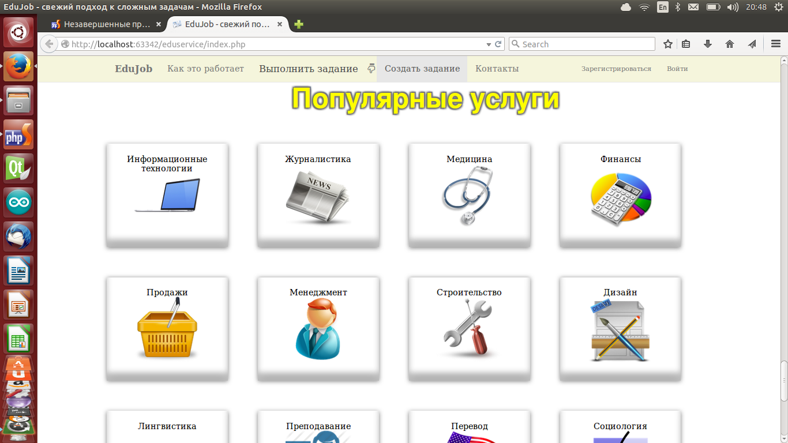
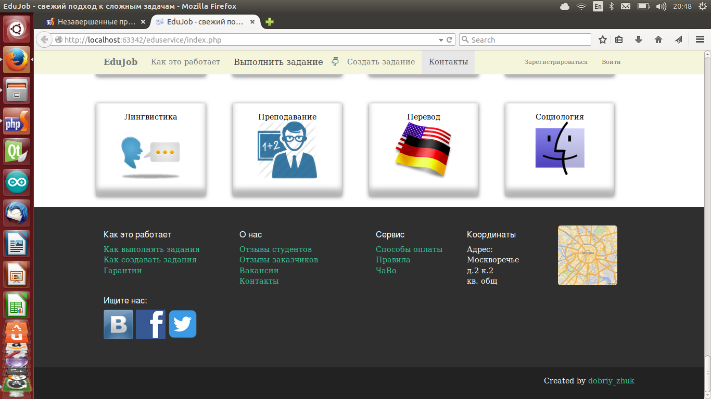

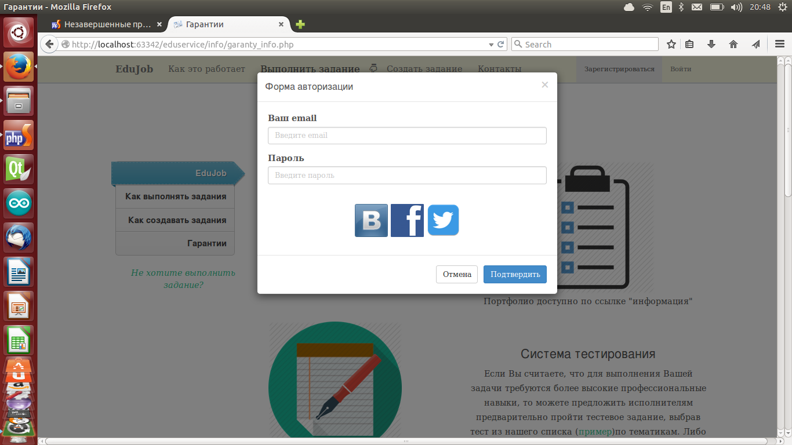
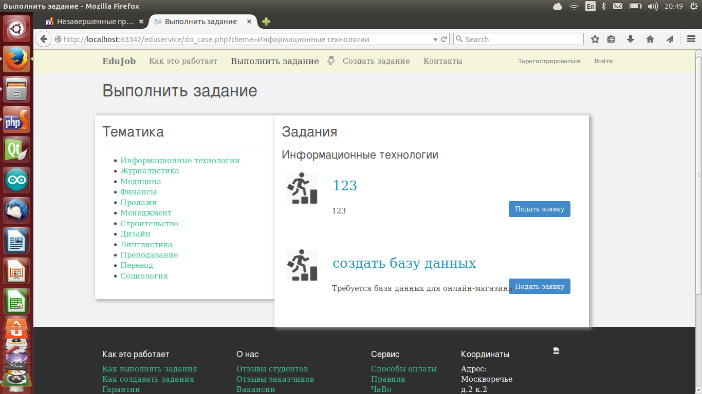 Согласен, возможно, не самая лучшая страничка с заданиями.
Итоги/Выводы:
- Прежде чем что-то создавать проверьте реальный спрос
- Изучите конкурентов, возможно не случайно их оотсутствие;)
- Строить бизнес надо с людьми, которые хотят этого, а не приходят, когда есть свободное время от нечего делать
- В команде должны быть реально работающие все, а не два человека, включая студента Сколковского универа
- Я освоил достаточно много новых интрументов в создании сайтов на фреймоврке Bootstrap
- Мне кажется, что мои дизанерский навыки улучшаются
Данный проект я пока что оставлю в стадии заморозки и, возможно, когда определю его действительную ценность, продолжу работу.
март-май, 2014
CinemaFood
Как и полагается много картинок снизу: 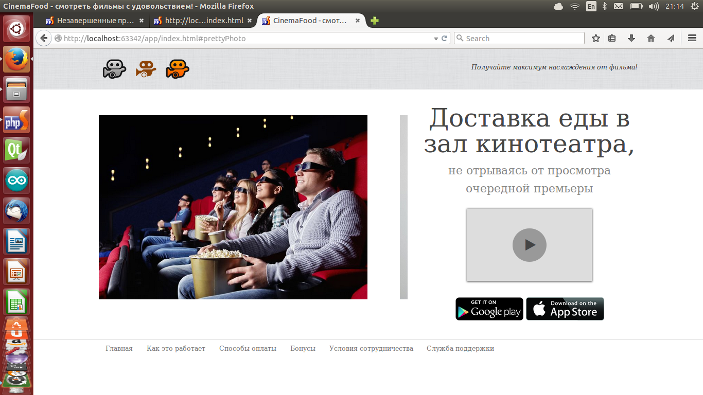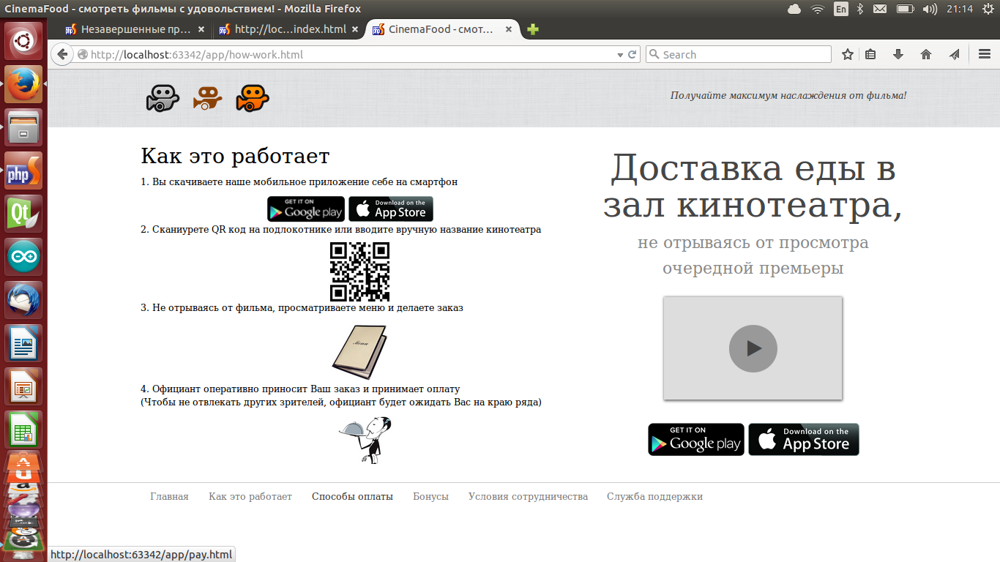
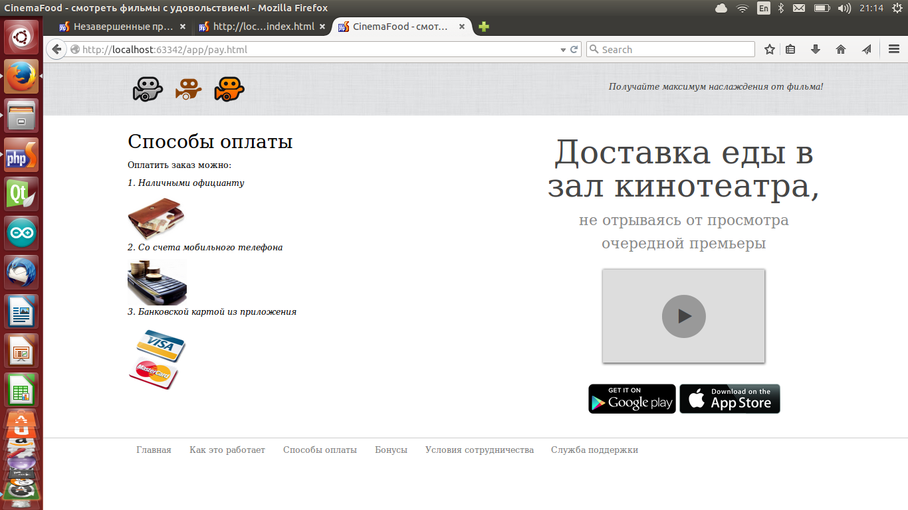
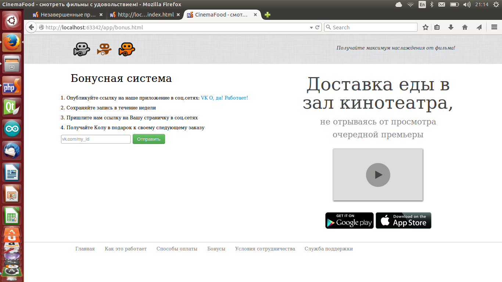
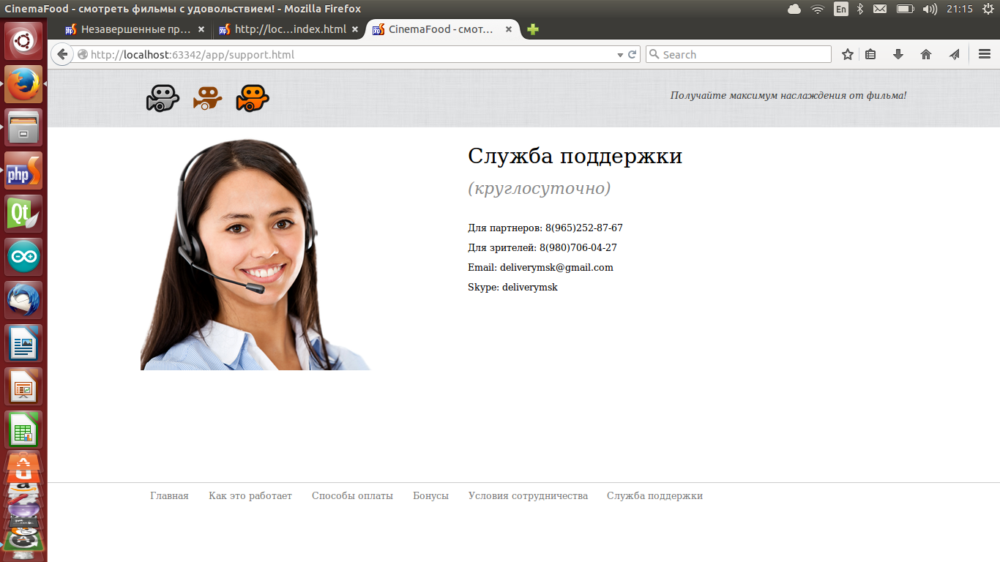
Далее страницы, где администратор обрабатывает заказы и формирует меню
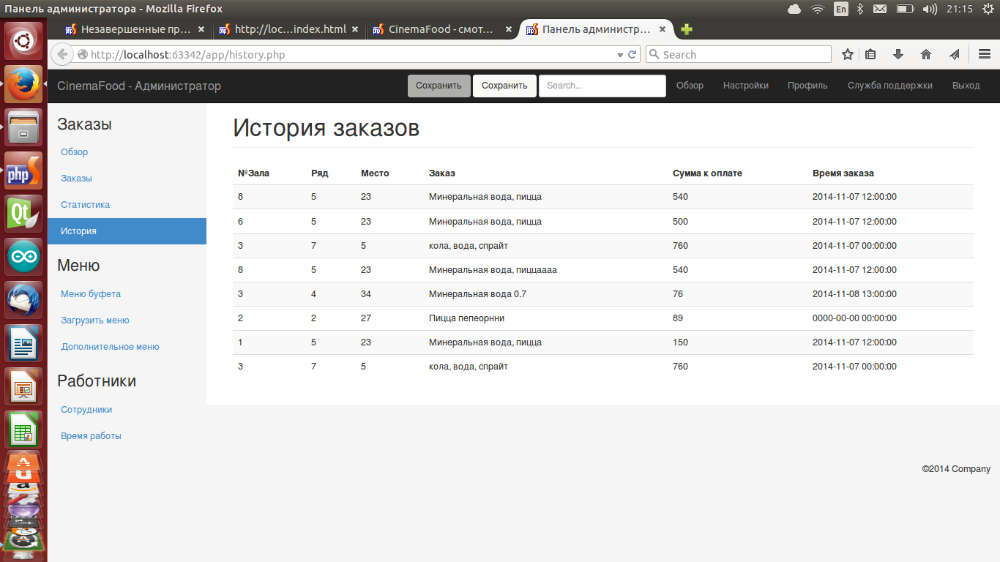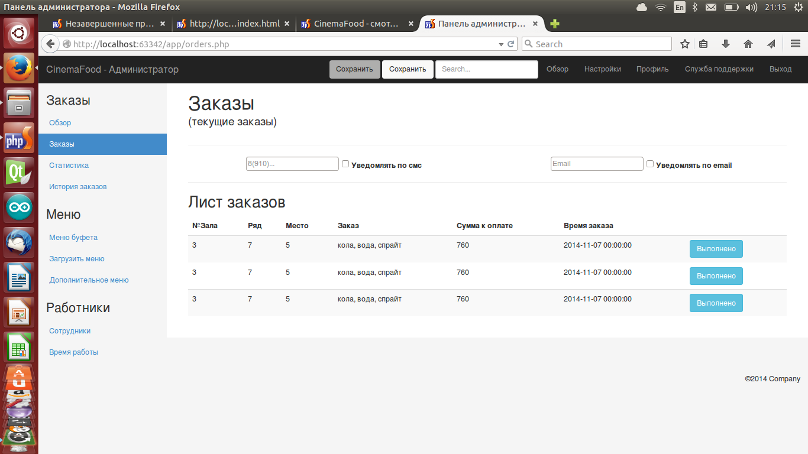
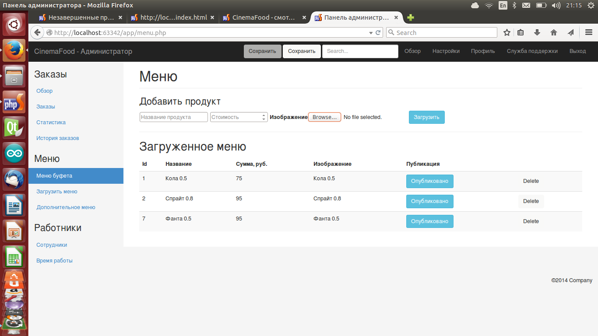
А теперь немного описания того, что же это такое. Данный проект я назвал "CinemaFood". Это сервис, позволяющий пользователям заказывать еду из буфета (попкорн, кока колу и тд), находясь в кресле кинтеатра прямо с телефона.
Мне казалось, что это действительно клевый проект, где пользователям больше не надо выходить, чтобы докупить себе покушать, когда попкорн закончился еще на рекламе. Я подумал, что сам бы даже пользовался такой услугой. Но как обычно решил посоветоваться с людьми. Девушка сказала, что это только для таких же шальных, как и я. Да и очевидные проблемы были на лицо: официант будет мешать зрителю в просмотре кино.
Я даже написал приложение, где формируется заказ и отправляется на сервер к администратору.
На весь Мир я нашел всего один аналогичный проект, который писала компания Maestro в Австралии. Но, почитав отзыв, я понял, что их сервис быстренько нагнулся все из-за той же проблемы хождения официанта.
Пока я тоже в действительности не знаю как решить проблему мешающего официанта, но надеюсь рано или поздно приду к адекватному исходу.
Итоги/выводы:
- Прежде чем что-то начинать идею надо протестировать!
- Читать отзывы о конкурентах заранее и по-максимуму
ps...Посмотрел я картинки своих наработок и задумался. Стоит доделать сервис, как никак здесь делов осталось совсем чуток, а вероятность успеха 50%. Надо добить, как время появится.
Октябрь, 2014
"Translator". Читалка - переводчик
Для изучения английского языка я использую множество всяких разносторонних методов. Все мои устройства на английском, информацию я ищу на английском, на форумах я тоже общаюсь лишь на англоязычных.
И вот я решил попробовать новый метод - почитать английскую литературу. Выбор пал на "Франкенштейна". Забрал я книгу и начал ее читать. Уже на странице 2-3 я осознал, что понимаю лишь мелкую часть прочитанного. И моим оборонным комплексом считается простое чтение английских слов, не задумываясь над содержанием целых предложенией и абзацев.
Эту проблему я попробовал решить необычным способом путем чтения вместе с телефонным словарем. Это было ужасно неудобно! Читаешь-переводишь-держишь все в руках. Тогда я понял, что идеальным выходом будет нахождение всего в одном месте. В книгу словарь не засунешь, а вот в телефон книгу без проблем.
После всего вышесказанного я накидал pdf парсер, и на этом, к сожалению, все остановилось...
Этот проектик я публикую здесь ради сохранения. Потому что, вроде как, идея неплохая, а сделал я по ней всего ничего. Рано или поздно вернусь обязательно.
Июль, 2014